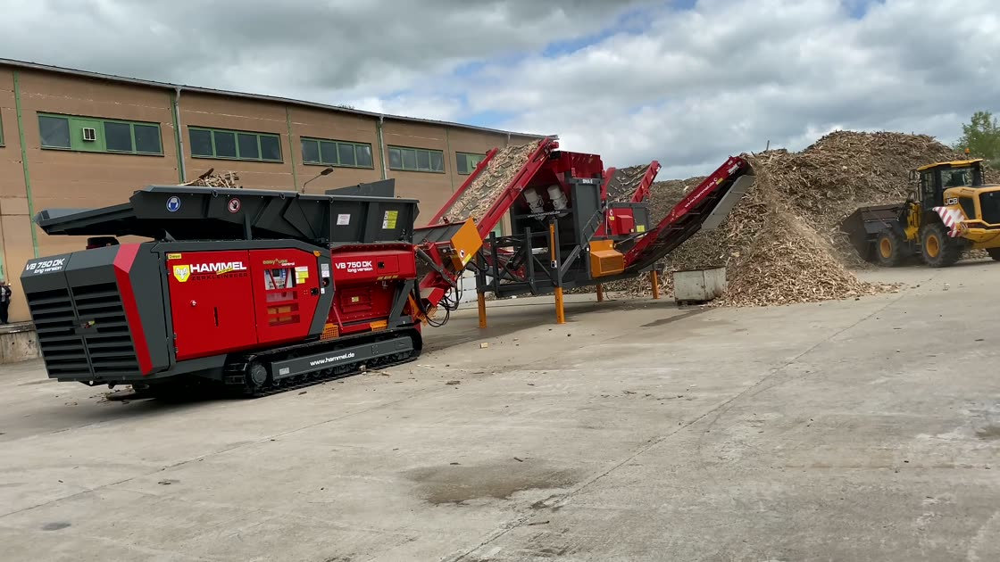

EINSATZBEREICH
Altholz & Grünabfälle
MATERIALIEN
- Altholz
- Grünschnitt

Wir entwickeln durchdachte Lösungen für anspruchsvolle Recyclingaufgaben.

WISSENSWERTES
| MATERIAL | 450 | 650 | 750 | 850 | 950 | 1500 |
|---|
* Die angegebenen Leistungsdaten sind ca.-Angaben ohne Gewähr und von der entsprechenden Ausstattung der Maschine, der Wellenkonfiguration sowie der optimalen Materialaufgabe abhängig.
Zwölf spannende Einblicke in Materialien, Technik und Recycling.